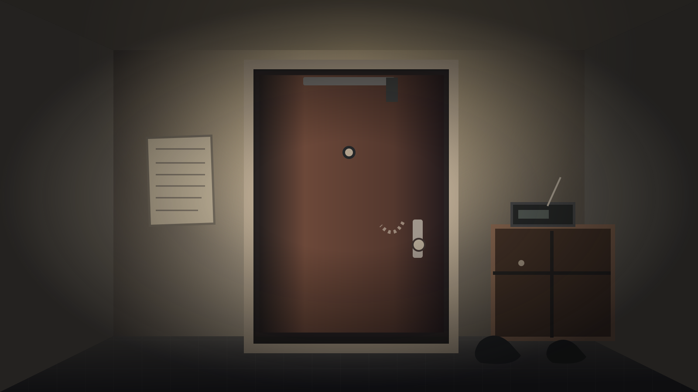

A QUIET NIGHT · 2003/08/17
302室 · 玄关
门外传来了第三次敲门
TIME18:47
SANITY100
ATTENTION0

SCENE 01 / FOYER固定镜头 · 纯二维
◉ 点击发光标记进行调查看似一切正常的玄关
旁白
咚。咚。咚。第三次敲门过后，整个公寓忽然安静下来。
你的行动 CONTEXT ACTIONS点击卡牌调查，不是扑克凑牌
背景替换仅在当前页面有效，刷新后恢复原始示意图。